基本設定 5/25/75日線：移動平均線と株価の位置関係パターン別 過去事例
移動平均: 5/25/75日（単純移動平均, 終値）＋参考に50日線（灰色点線）。
▲=条件を満たした日（エントリーは翌営業日の始値）。黄色の網掛け=その後20営業日。下段=出来高、MACD(12,26,9)。
赤い左線=20日後に上昇した事例、青い左線=下落した事例（乱数で抽出。代表性は保証しない）。
対象はTOPIX100（現構成を遡って使用＝生存者バイアスあり）。株価は分割調整済み・配当未調整。売買の推奨ではありません。
直近チャート（比較用）
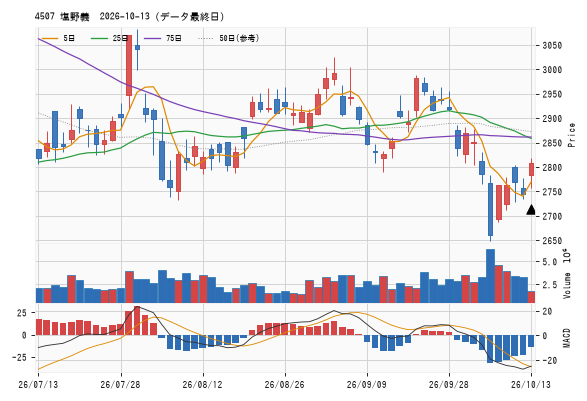
4507 塩野義 2026-10-13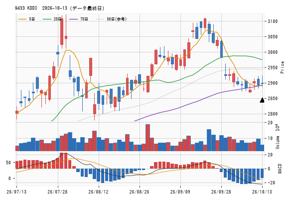
9433 KDDI 2026-10-13P1 短期のみ上｜上向き
事例数 27,178件 / 20日後上昇の割合 54.3% / 平均 +1.16%
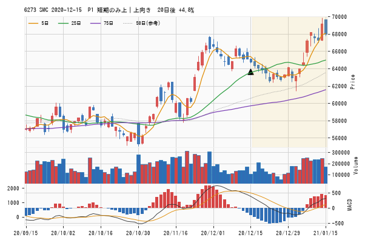
上昇 6273 SMC 2020-12-15
5日 -3.5% / 10日 -1.1% / 20日 +4.8%（対TOPIX +1.3pt, 最大下落 -5.3%）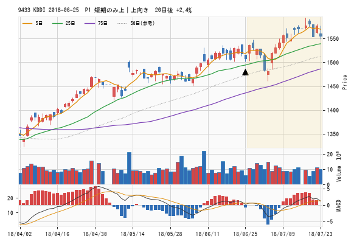
上昇 9433 KDDI 2018-06-25
5日 -2.4% / 10日 +2.4% / 20日 +2.4%（対TOPIX +2.7pt, 最大下落 -3.9%）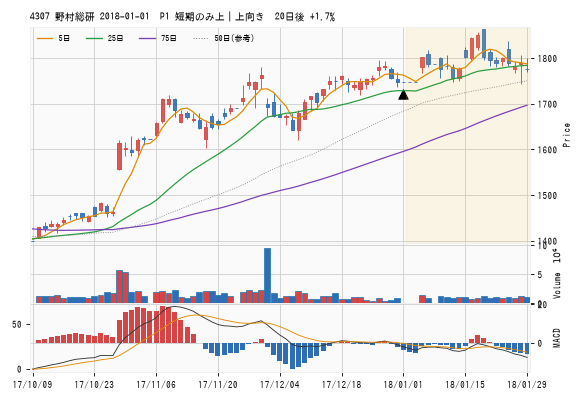
上昇 4307 野村総研 2018-01-01
5日 +2.3% / 10日 +3.2% / 20日 +1.7%（対TOPIX -1.9pt, 最大下落 -0.2%）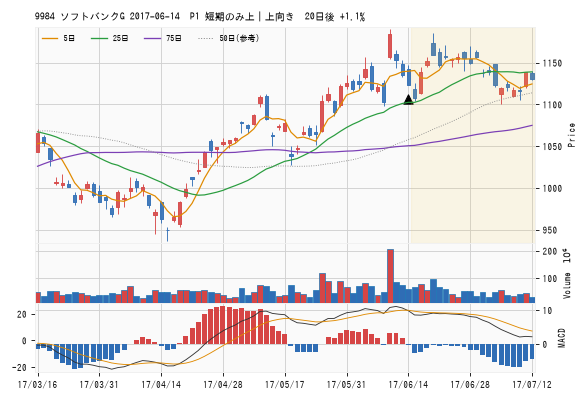
上昇 9984 ソフトバンクG 2017-06-14
5日 +2.6% / 10日 +2.7% / 20日 +1.1%（対TOPIX +0.5pt, 最大下落 -1.7%）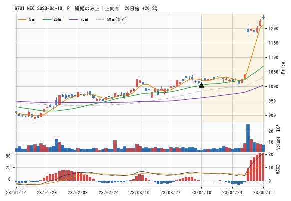
上昇 6701 NEC 2023-04-10
5日 +0.6% / 10日 -0.8% / 20日 +20.2%（対TOPIX +15.7pt, 最大下落 -2.3%）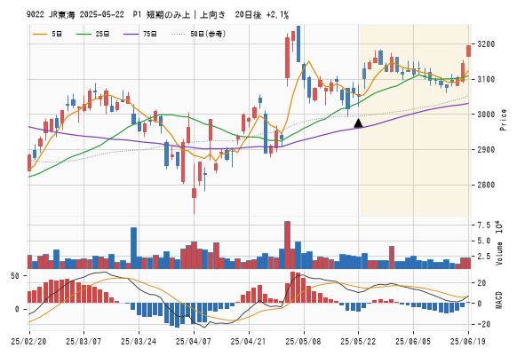
上昇 9022 JR東海 2025-05-22
5日 -0.3% / 10日 -0.5% / 20日 +2.1%（対TOPIX -0.2pt, 最大下落 -2.2%）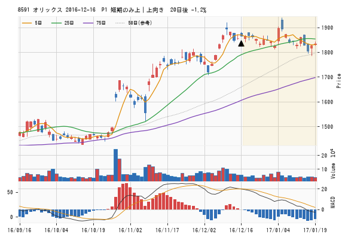
下落 8591 オリックス 2016-12-16
5日 -1.2% / 10日 +2.3% / 20日 -1.2%（対TOPIX -0.3pt, 最大下落 -3.7%）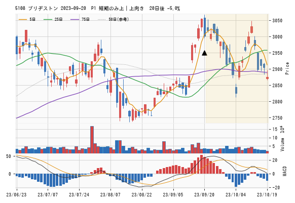
下落 5108 ブリヂストン 2023-09-20
5日 -1.4% / 10日 -6.7% / 20日 -5.0%（対TOPIX -0.3pt, 最大下落 -7.1%）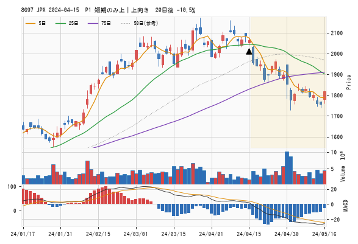
下落 8697 JPX 2024-04-15
5日 -6.6% / 10日 -8.8% / 20日 -10.5%（対TOPIX -10.3pt, 最大下落 -15.0%）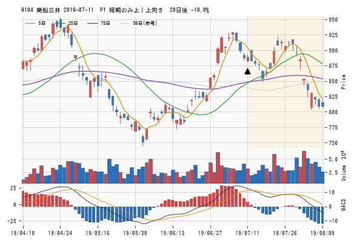
下落 9104 商船三井 2019-07-11
5日 -3.7% / 10日 +0.8% / 20日 -10.0%（対TOPIX -5.1pt, 最大下落 -10.7%）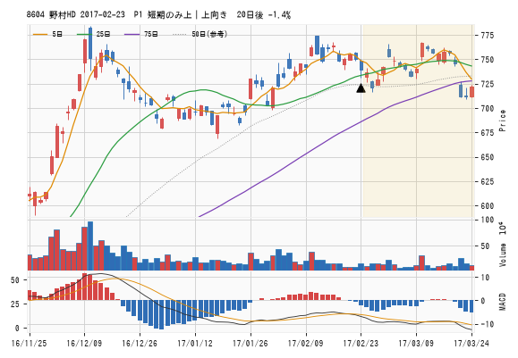
下落 8604 野村HD 2017-02-23
5日 +2.9% / 10日 +1.2% / 20日 -1.4%（対TOPIX -1.1pt, 最大下落 -3.1%）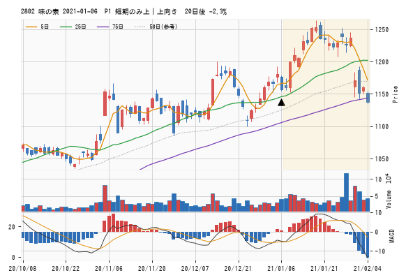
下落 2802 味の素 2021-01-06
5日 +5.8% / 10日 +6.1% / 20日 -2.3%（対TOPIX -4.7pt, 最大下落 -2.4%）P1 短期のみ上｜下向き
事例数 7,043件 / 20日後上昇の割合 53.7% / 平均 +0.75%
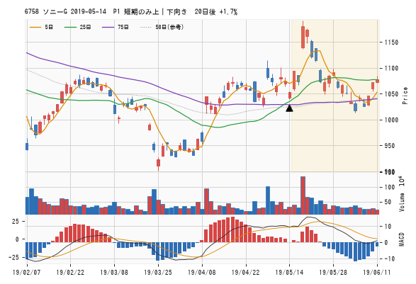
上昇 6758 ソニーG 2019-05-14
5日 +5.9% / 10日 +3.0% / 20日 +1.7%（対TOPIX +0.1pt, 最大下落 -4.3%）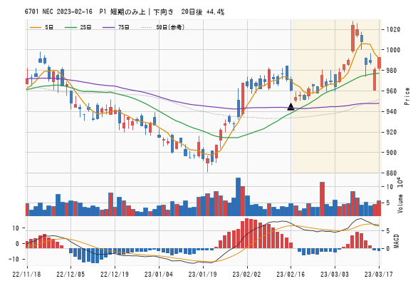
上昇 6701 NEC 2023-02-16
5日 +1.5% / 10日 +1.4% / 20日 +4.4%（対TOPIX +5.7pt, 最大下落 -0.2%）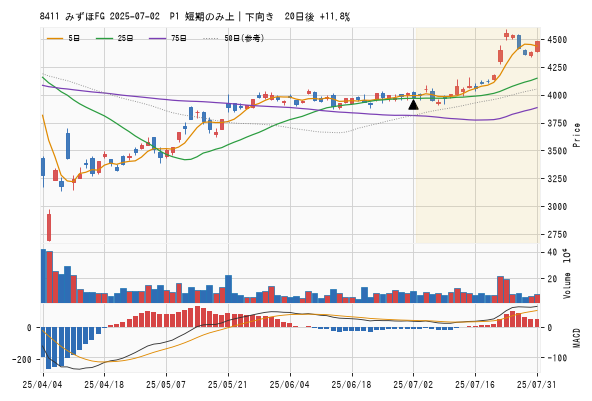
上昇 8411 みずほFG 2025-07-02
5日 -0.8% / 10日 +1.4% / 20日 +11.8%（対TOPIX +9.9pt, 最大下落 -2.5%）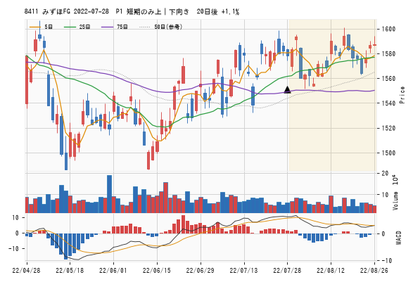
上昇 8411 みずほFG 2022-07-28
5日 -0.4% / 10日 +1.3% / 20日 +1.1%（対TOPIX -0.2pt, 最大下落 -1.1%）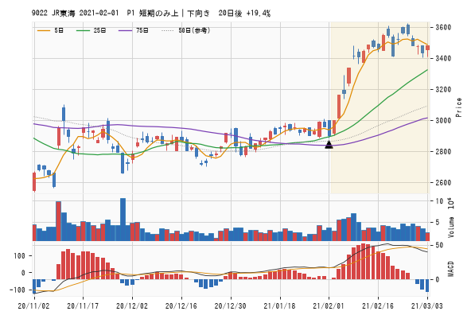
上昇 9022 JR東海 2021-02-01
5日 +17.1% / 10日 +18.6% / 20日 +19.4%（対TOPIX +15.6pt, 最大下落 -0.5%）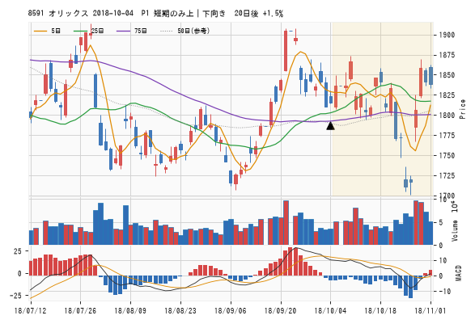
上昇 8591 オリックス 2018-10-04
5日 +0.7% / 10日 +1.7% / 20日 +1.5%（対TOPIX +10.5pt, 最大下落 -6.0%）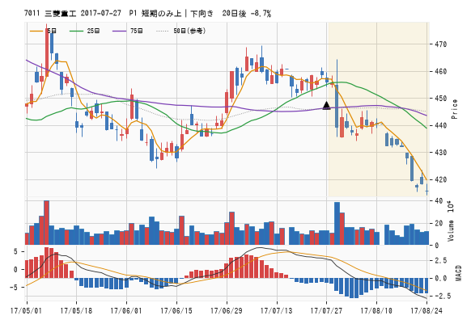
下落 7011 三菱重工 2017-07-27
5日 -3.8% / 10日 -3.2% / 20日 -8.7%（対TOPIX -6.7pt, 最大下落 -8.9%）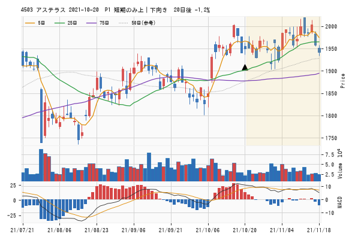
下落 4503 アステラス 2021-10-20
5日 +0.1% / 10日 +1.0% / 20日 -1.2%（対TOPIX -1.8pt, 最大下落 -3.2%）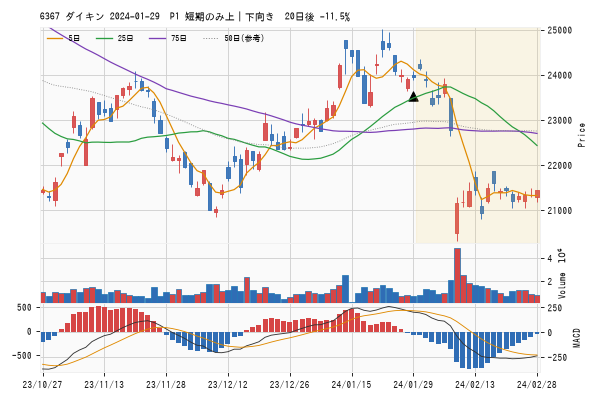
下落 6367 ダイキン 2024-01-29
5日 -1.8% / 10日 -11.5% / 20日 -11.5%（対TOPIX -17.1pt, 最大下落 -16.2%）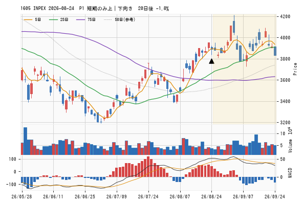
下落 1605 INPEX 2026-08-24
5日 +1.3% / 10日 -3.0% / 20日 -1.8%（対TOPIX -2.0pt, 最大下落 -4.6%）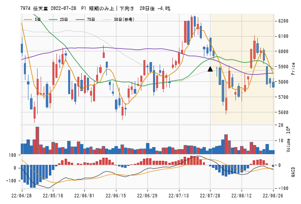
下落 7974 任天堂 2022-07-28
5日 -5.2% / 10日 -4.6% / 20日 -4.0%（対TOPIX -5.4pt, 最大下落 -6.9%）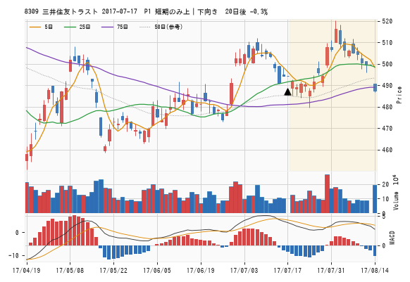
下落 8309 三井住友トラスト 2017-07-17
5日 -0.3% / 10日 +3.7% / 20日 -0.3%（対TOPIX +nanpt, 最大下落 -1.9%）P2 中期のみ上｜上向き
事例数 8,883件 / 20日後上昇の割合 55.5% / 平均 +1.36%
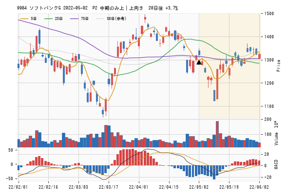
上昇 9984 ソフトバンクG 2022-05-02
5日 -12.2% / 10日 -1.2% / 20日 +3.7%（対TOPIX +2.2pt, 最大下落 -12.2%）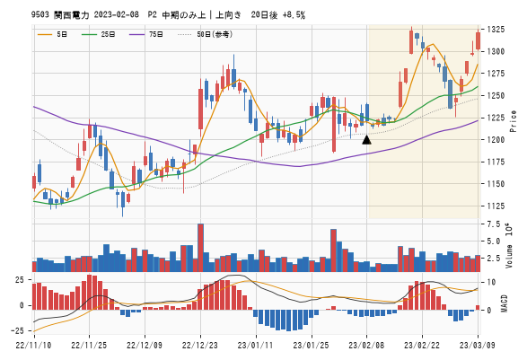
上昇 9503 関西電力 2023-02-08
5日 +0.5% / 10日 +7.1% / 20日 +8.5%（対TOPIX +3.8pt, 最大下落 -0.4%）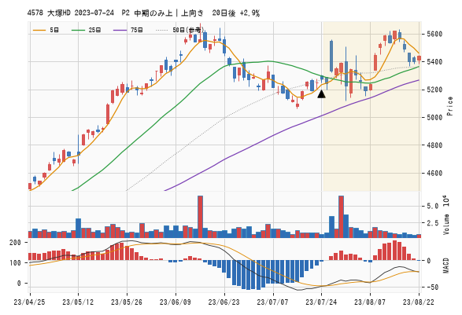
上昇 4578 大塚HD 2023-07-24
5日 -1.1% / 10日 -0.9% / 20日 +2.9%（対TOPIX +3.7pt, 最大下落 -3.1%）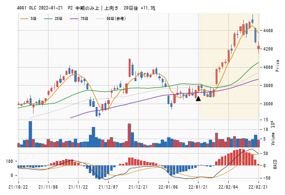
上昇 4661 OLC 2022-01-21
5日 -1.2% / 10日 +10.1% / 20日 +11.3%（対TOPIX +11.2pt, 最大下落 -3.5%）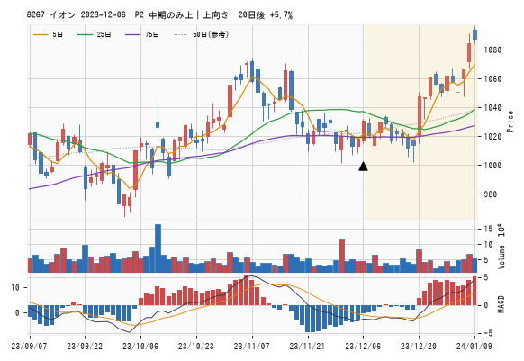
上昇 8267 イオン 2023-12-06
5日 -1.2% / 10日 +1.8% / 20日 +5.7%（対TOPIX +3.8pt, 最大下落 -2.6%）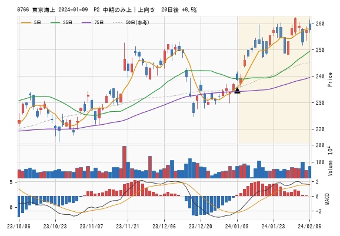
上昇 8766 東京海上 2024-01-09
5日 +5.7% / 10日 +8.4% / 20日 +8.5%（対TOPIX +3.5pt, 最大下落 -0.7%）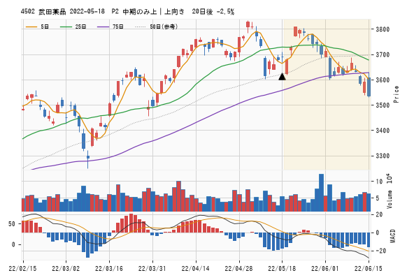
下落 4502 武田薬品 2022-05-18
5日 +4.4% / 10日 +2.4% / 20日 -2.5%（対TOPIX -3.2pt, 最大下落 -2.6%）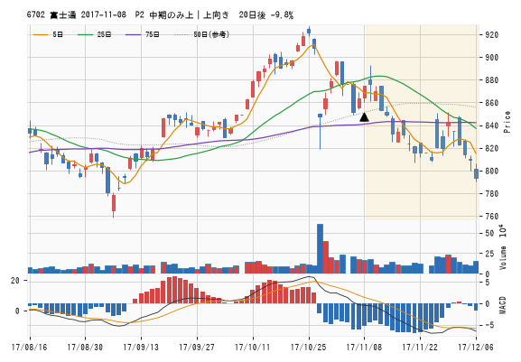
下落 6702 富士通 2017-11-08
5日 -5.4% / 10日 -7.3% / 20日 -9.8%（対TOPIX -6.7pt, 最大下落 -10.2%）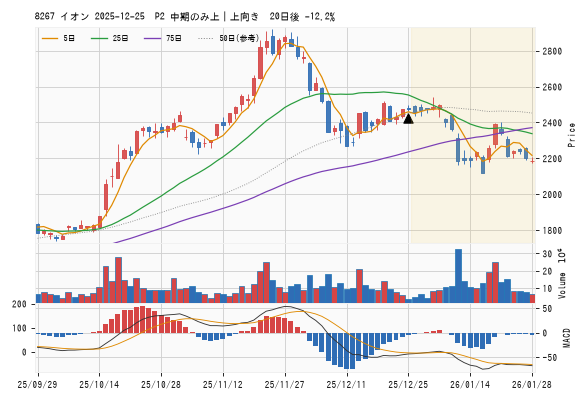
下落 8267 イオン 2025-12-25
5日 +0.2% / 10日 -12.0% / 20日 -12.2%（対TOPIX -15.5pt, 最大下落 -15.0%）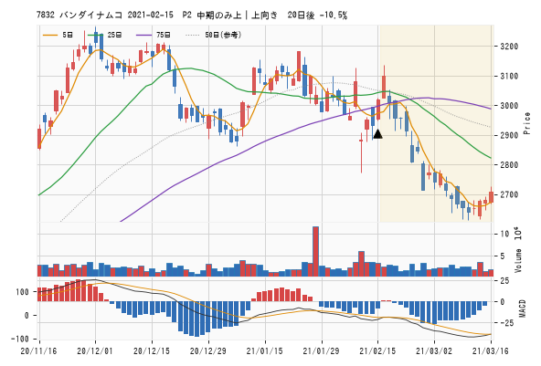
下落 7832 バンダイナムコ 2021-02-15
5日 -3.7% / 10日 -9.4% / 20日 -10.5%（対TOPIX -11.6pt, 最大下落 -13.6%）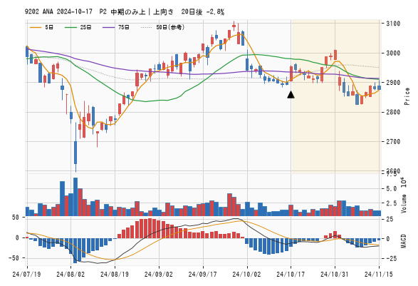
下落 9202 ANA 2024-10-17
5日 -1.6% / 10日 +1.7% / 20日 -2.8%（対TOPIX -3.4pt, 最大下落 -4.6%）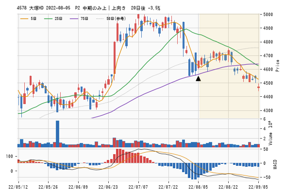
下落 4578 大塚HD 2022-08-05
5日 +2.0% / 10日 +2.3% / 20日 -3.5%（対TOPIX -2.8pt, 最大下落 -4.2%）P2 中期のみ上｜下向き
事例数 1,141件 / 20日後上昇の割合 54.6% / 平均 +0.99%
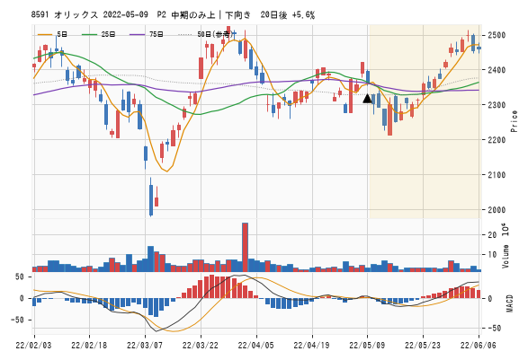
上昇 8591 オリックス 2022-05-09
5日 -3.3% / 10日 +1.3% / 20日 +5.6%（対TOPIX +1.3pt, 最大下落 -5.0%）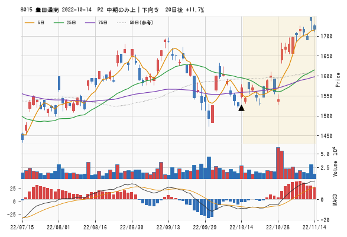
上昇 8015 豊田通商 2022-10-14
5日 -0.3% / 10日 +0.3% / 20日 +11.7%（対TOPIX +7.2pt, 最大下落 -0.7%）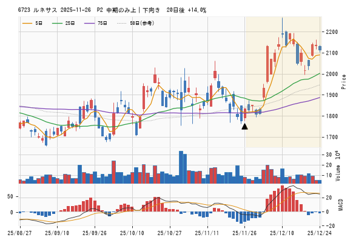
上昇 6723 ルネサス 2025-11-26
5日 +4.1% / 10日 +18.0% / 20日 +14.0%（対TOPIX +13.0pt, 最大下落 -3.3%）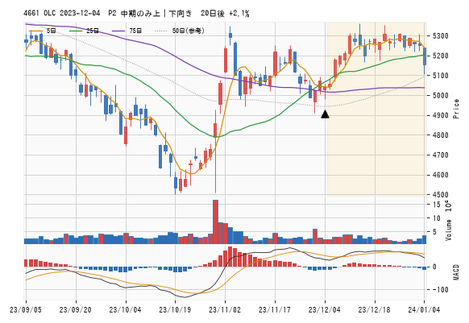
上昇 4661 OLC 2023-12-04
5日 +5.1% / 10日 +4.7% / 20日 +2.1%（対TOPIX +1.1pt, 最大下落 -0.3%）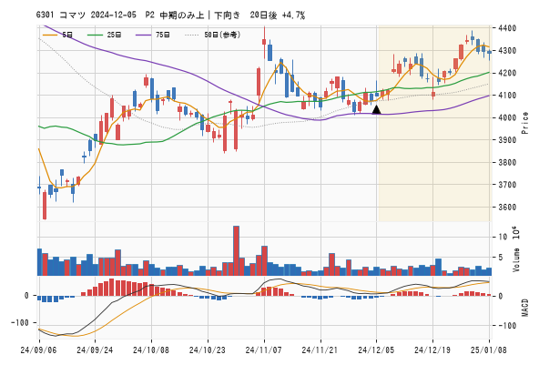
上昇 6301 コマツ 2024-12-05
5日 +3.9% / 10日 +0.5% / 20日 +4.7%（対TOPIX +3.6pt, 最大下落 -0.5%）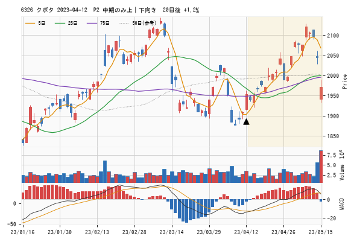
上昇 6326 クボタ 2023-04-12
5日 +1.2% / 10日 +2.2% / 20日 +1.2%（対TOPIX -4.5pt, 最大下落 -1.4%）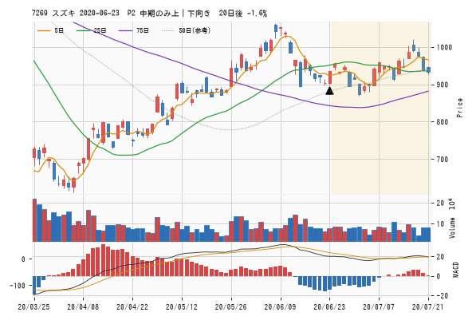
下落 7269 スズキ 2020-06-23
5日 -3.5% / 10日 +1.2% / 20日 -1.6%（対TOPIX +0.2pt, 最大下落 -8.2%）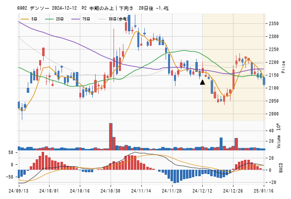
下落 6902 デンソー 2024-12-12
5日 -4.1% / 10日 +1.2% / 20日 -1.4%（対TOPIX +1.0pt, 最大下落 -5.1%）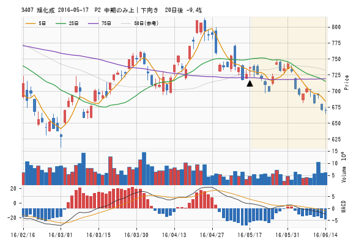
下落 3407 旭化成 2016-05-17
5日 -5.4% / 10日 +0.5% / 20日 -9.4%（対TOPIX -4.9pt, 最大下落 -10.1%）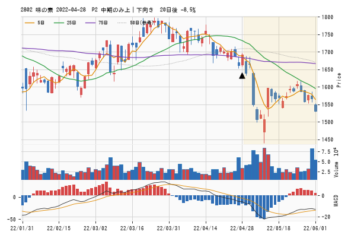
下落 2802 味の素 2022-04-28
5日 -9.1% / 10日 -6.2% / 20日 -8.5%（対TOPIX -10.7pt, 最大下落 -14.0%）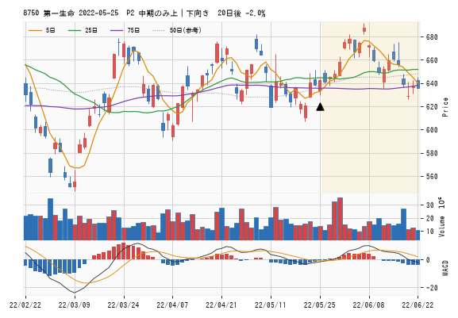
下落 8750 第一生命 2022-05-25
5日 +4.0% / 10日 +3.6% / 20日 -2.0%（対TOPIX -0.6pt, 最大下落 -3.5%）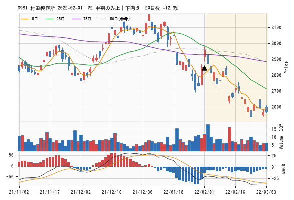
下落 6981 村田製作所 2022-02-01
5日 -5.6% / 10日 -7.3% / 20日 -12.3%（対TOPIX -10.7pt, 最大下落 -14.1%）P3 長期のみ上｜上向き
事例数 2,238件 / 20日後上昇の割合 48.5% / 平均 -0.04%
上昇 2914 JT 2023-02-13
5日 +3.9% / 10日 +3.2% / 20日 +1.5%（対TOPIX +4.0pt, 最大下落 -0.1%）上昇 8267 イオン 2024-05-10
5日 -1.0% / 10日 -0.4% / 20日 +5.5%（対TOPIX +4.4pt, 最大下落 -2.6%）上昇 9433 KDDI 2024-01-04
5日 +6.8% / 10日 +8.7% / 20日 +7.2%（対TOPIX +0.7pt, 最大下落 -0.3%）上昇 8697 JPX 2017-09-22
5日 +2.6% / 10日 +6.2% / 20日 +8.8%（対TOPIX +4.7pt, 最大下落 -1.6%）上昇 8591 オリックス 2020-09-03
5日 +4.0% / 10日 +5.5% / 20日 +4.2%（対TOPIX +1.1pt, 最大下落 -1.1%）上昇 9022 JR東海 2017-03-13
5日 -0.2% / 10日 +0.8% / 20日 +0.1%（対TOPIX +4.3pt, 最大下落 -3.3%）下落 4568 第一三共 2016-06-29
5日 +0.9% / 10日 +6.2% / 20日 -2.4%（対TOPIX -3.8pt, 最大下落 -2.8%）下落 9020 JR東日本 2018-08-07
5日 -1.3% / 10日 -3.2% / 20日 -3.4%（対TOPIX -1.7pt, 最大下落 -4.0%）下落 6503 三菱電機 2023-09-15
5日 -2.6% / 10日 -4.2% / 20日 -5.2%（対TOPIX -0.9pt, 最大下落 -9.4%）下落 5401 日本製鉄 2025-11-20
5日 +3.3% / 10日 +1.6% / 20日 -0.6%（対TOPIX -4.6pt, 最大下落 -3.3%）下落 8001 伊藤忠 2026-05-07
5日 +0.9% / 10日 -3.8% / 20日 -8.4%（対TOPIX -11.7pt, 最大下落 -9.8%）下落 4502 武田薬品 2019-05-14
5日 -1.9% / 10日 -2.5% / 20日 -5.4%（対TOPIX -7.0pt, 最大下落 -11.9%）
P3 長期のみ上｜下向き
事例数 15,736件 / 20日後上昇の割合 54.3% / 平均 +0.98%
上昇 3382 セブン&アイHD 2025-09-16
5日 +1.6% / 10日 -0.7% / 20日 +0.2%（対TOPIX -2.1pt, 最大下落 -4.1%）上昇 6988 日東電工 2024-06-24
5日 -0.4% / 10日 +2.1% / 20日 +5.8%（対TOPIX +4.7pt, 最大下落 -1.6%）上昇 8001 伊藤忠 2018-09-06
5日 +2.0% / 10日 +8.2% / 20日 +16.3%（対TOPIX +8.4pt, 最大下落 -0.9%）上昇 3382 セブン&アイHD 2018-03-13
5日 -0.2% / 10日 +0.4% / 20日 +6.3%（対TOPIX +5.8pt, 最大下落 -3.5%）上昇 9434 ソフトバンク 2020-04-15
5日 +0.1% / 10日 +4.8% / 20日 +0.4%（対TOPIX -4.6pt, 最大下落 -1.3%）上昇 6902 デンソー 2019-06-14
5日 +0.3% / 10日 +1.8% / 20日 +3.0%（対TOPIX +2.7pt, 最大下落 -0.7%）下落 6758 ソニーG 2023-09-07
5日 +1.0% / 10日 -2.6% / 20日 -2.1%（対TOPIX +1.8pt, 最大下落 -4.1%）下落 9104 商船三井 2025-04-25
5日 -10.8% / 10日 -4.6% / 20日 -2.1%（対TOPIX -6.8pt, 最大下落 -15.6%）下落 6762 TDK 2017-05-08
5日 -2.9% / 10日 -4.5% / 20日 -2.6%（対TOPIX -4.2pt, 最大下落 -8.1%）下落 5401 日本製鉄 2017-04-26
5日 -1.6% / 10日 -5.3% / 20日 -6.7%（対TOPIX -9.3pt, 最大下落 -7.5%）下落 9735 セコム 2021-06-15
5日 -1.6% / 10日 -4.3% / 20日 -3.2%（対TOPIX -1.3pt, 最大下落 -6.4%）下落 8604 野村HD 2024-08-23
5日 +0.4% / 10日 -5.1% / 20日 -7.2%（対TOPIX -6.7pt, 最大下落 -13.9%）
P4 短期+中期｜上向き
事例数 19,687件 / 20日後上昇の割合 56.5% / 平均 +1.49%
上昇 8630 SOMPO 2017-06-23
5日 +1.4% / 10日 +2.0% / 20日 +2.8%（対TOPIX +3.6pt, 最大下落 -1.4%）上昇 8802 三菱地所 2024-02-01
5日 +2.9% / 10日 +3.0% / 20日 +18.3%（対TOPIX +11.9pt, 最大下落 -2.0%）上昇 8267 イオン 2023-07-18
5日 +2.7% / 10日 +8.4% / 20日 +8.5%（対TOPIX +8.9pt, 最大下落 -0.6%）上昇 7974 任天堂 2016-10-19
5日 -5.5% / 10日 -2.1% / 20日 +0.4%（対TOPIX -4.4pt, 最大下落 -14.4%）上昇 8309 三井住友トラスト 2024-06-17
5日 +0.1% / 10日 +4.5% / 20日 +7.9%（対TOPIX +3.2pt, 最大下落 -1.5%）上昇 6981 村田製作所 2025-11-21
5日 +3.9% / 10日 +9.5% / 20日 +3.3%（対TOPIX +0.9pt, 最大下落 -1.7%）下落 8001 伊藤忠 2020-09-30
5日 -0.6% / 10日 -1.9% / 20日 -6.3%（対TOPIX -4.8pt, 最大下落 -7.0%）下落 8267 イオン 2026-01-07
5日 -8.4% / 10日 -9.3% / 20日 -7.7%（対TOPIX -12.0pt, 最大下落 -14.4%）下落 6971 京セラ 2017-06-30
5日 -1.1% / 10日 -1.6% / 20日 -0.1%（対TOPIX +1.2pt, 最大下落 -3.8%）下落 4901 富士フイルム 2018-10-25
5日 -0.1% / 10日 +0.2% / 20日 -10.1%（対TOPIX -10.8pt, 最大下落 -11.2%）下落 4503 アステラス 2025-10-01
5日 -0.1% / 10日 -2.3% / 20日 -3.0%（対TOPIX -9.6pt, 最大下落 -5.6%）下落 4503 アステラス 2021-07-20
5日 -1.9% / 10日 -7.9% / 20日 -5.1%（対TOPIX -3.2pt, 最大下落 -10.7%）
P4 短期+中期｜下向き
事例数 1,998件 / 20日後上昇の割合 57.2% / 平均 +1.68%
上昇 4502 武田薬品 2026-08-03
5日 +4.9% / 10日 +7.2% / 20日 +9.9%（対TOPIX +4.0pt, 最大下落 -1.8%）上昇 6954 ファナック 2019-03-08
5日 +3.6% / 10日 +3.0% / 20日 +14.0%（対TOPIX +10.0pt, 最大下落 -1.3%）上昇 3407 旭化成 2025-07-22
5日 +1.2% / 10日 +6.9% / 20日 +14.0%（対TOPIX +6.3pt, 最大下落 -0.1%）上昇 8725 MS&AD 2020-10-28
5日 +0.6% / 10日 +8.8% / 20日 +9.7%（対TOPIX -2.2pt, 最大下落 -1.4%）上昇 6988 日東電工 2023-04-10
5日 +0.8% / 10日 +0.0% / 20日 +10.5%（対TOPIX +6.0pt, 最大下落 -3.1%）上昇 9503 関西電力 2023-02-02
5日 -0.2% / 10日 +3.9% / 20日 +2.4%（対TOPIX -0.5pt, 最大下落 -1.4%）下落 4568 第一三共 2017-07-20
5日 -2.1% / 10日 -4.3% / 20日 -5.4%（対TOPIX -4.4pt, 最大下落 -8.0%）下落 5803 フジクラ 2020-06-12
5日 +4.4% / 10日 -2.5% / 20日 -5.0%（対TOPIX -1.7pt, 最大下落 -5.3%）下落 9433 KDDI 2019-02-07
5日 +0.6% / 10日 +2.2% / 20日 -1.9%（対TOPIX -3.4pt, 最大下落 -2.1%）下落 2502 アサヒGHD 2016-05-23
5日 +5.8% / 10日 +0.6% / 20日 -5.6%（対TOPIX -1.5pt, 最大下落 -6.1%）下落 8750 第一生命 2020-06-22
5日 -6.4% / 10日 +0.3% / 20日 -3.2%（対TOPIX -0.4pt, 最大下落 -7.7%）下落 6367 ダイキン 2024-05-30
5日 -0.1% / 10日 +2.2% / 20日 -1.3%（対TOPIX -3.4pt, 最大下落 -2.5%）
P5 短期+長期｜上向き
事例数 1,273件 / 20日後上昇の割合 51.5% / 平均 +0.60%
上昇 8802 三菱地所 2018-12-20
5日 -2.5% / 10日 -0.8% / 20日 +6.3%（対TOPIX +3.4pt, 最大下落 -7.5%）上昇 9434 ソフトバンク 2024-05-09
5日 +1.2% / 10日 -0.4% / 20日 +2.1%（対TOPIX +1.3pt, 最大下落 -2.7%）上昇 6702 富士通 2025-01-10
5日 -2.8% / 10日 +0.2% / 20日 +5.7%（対TOPIX +4.8pt, 最大下落 -6.8%）上昇 9984 ソフトバンクG 2016-08-04
5日 +10.4% / 10日 +12.6% / 20日 +19.4%（対TOPIX +15.0pt, 最大下落 -0.3%）上昇 4503 アステラス 2021-08-25
5日 +2.8% / 10日 +3.8% / 20日 +2.8%（対TOPIX -5.2pt, 最大下落 -1.5%）上昇 4507 塩野義 2024-11-06
5日 -1.5% / 10日 -4.2% / 20日 +0.2%（対TOPIX +0.6pt, 最大下落 -4.4%）下落 9020 JR東日本 2019-11-28
5日 -2.2% / 10日 -3.3% / 20日 -3.0%（対TOPIX -4.1pt, 最大下落 -3.8%）下落 4519 中外製薬 2022-10-19
5日 -4.2% / 10日 -5.2% / 20日 -4.6%（対TOPIX -8.9pt, 最大下落 -7.8%）下落 8306 三菱UFJ 2022-06-06
5日 -1.4% / 10日 -2.1% / 20日 -1.6%（対TOPIX +2.2pt, 最大下落 -2.9%）下落 2502 アサヒGHD 2016-08-01
5日 -2.8% / 10日 -2.0% / 20日 -2.8%（対TOPIX -3.4pt, 最大下落 -7.3%）下落 6503 三菱電機 2023-09-11
5日 +1.9% / 10日 -1.3% / 20日 -5.7%（対TOPIX -3.8pt, 最大下落 -8.4%）下落 6367 ダイキン 2025-01-09
5日 +0.1% / 10日 +2.7% / 20日 -11.1%（対TOPIX -11.6pt, 最大下落 -11.5%）
P5 短期+長期｜下向き
事例数 6,951件 / 20日後上昇の割合 54.2% / 平均 +0.95%
上昇 2502 アサヒGHD 2024-12-30
5日 -2.3% / 10日 -3.5% / 20日 +0.9%（対TOPIX +3.4pt, 最大下落 -5.0%）上昇 1925 大和ハウス 2025-07-01
5日 -1.0% / 10日 -0.2% / 20日 +1.7%（対TOPIX +0.3pt, 最大下落 -1.6%）上昇 1925 大和ハウス 2016-04-27
5日 -3.2% / 10日 +0.4% / 20日 +2.7%（対TOPIX +4.1pt, 最大下落 -9.5%）上昇 2914 JT 2022-04-13
5日 +3.4% / 10日 +2.7% / 20日 +7.1%（対TOPIX +8.3pt, 最大下落 0.0%）上昇 6752 パナソニック 2021-06-11
5日 -1.4% / 10日 +4.2% / 20日 +3.2%（対TOPIX +7.2pt, 最大下落 -4.8%）上昇 6762 TDK 2020-04-22
5日 +10.9% / 10日 +13.6% / 20日 +15.5%（対TOPIX +6.7pt, 最大下落 -0.2%）下落 4661 OLC 2024-07-10
5日 +0.4% / 10日 -3.8% / 20日 -13.7%（対TOPIX +2.6pt, 最大下落 -22.2%）下落 6988 日東電工 2018-08-21
5日 +0.7% / 10日 -0.8% / 20日 -0.7%（対TOPIX -5.1pt, 最大下落 -6.6%）下落 3407 旭化成 2019-07-04
5日 -3.4% / 10日 -2.6% / 20日 -12.6%（対TOPIX -7.0pt, 最大下落 -13.0%）下落 8750 第一生命 2019-04-08
5日 -0.2% / 10日 -1.7% / 20日 -6.4%（対TOPIX -1.3pt, 最大下落 -8.9%）下落 6146 ディスコ 2018-03-14
5日 -4.3% / 10日 -9.9% / 20日 -7.5%（対TOPIX -7.7pt, 最大下落 -12.8%）下落 8697 JPX 2022-11-18
5日 +2.5% / 10日 -0.6% / 20日 -4.0%（対TOPIX -2.0pt, 最大下落 -5.2%）
P6 中期+長期｜上向き
事例数 7,695件 / 20日後上昇の割合 54.4% / 平均 +1.03%
上昇 7269 スズキ 2021-01-04
5日 +9.7% / 10日 +8.0% / 20日 +1.5%（対TOPIX -1.8pt, 最大下落 -3.0%）上昇 9020 JR東日本 2019-11-01
5日 +1.0% / 10日 +0.3% / 20日 +0.7%（対TOPIX -1.0pt, 最大下落 -0.7%）上昇 9202 ANA 2021-04-23
5日 +4.3% / 10日 -0.3% / 20日 +8.3%（対TOPIX +8.8pt, 最大下落 -0.6%）上昇 9104 商船三井 2020-08-06
5日 +0.1% / 10日 +0.3% / 20日 +5.8%（対TOPIX +1.6pt, 最大下落 -3.2%）上昇 7532 PPIH 2021-05-19
5日 -2.9% / 10日 -2.6% / 20日 +7.1%（対TOPIX +2.5pt, 最大下落 -7.2%）上昇 8725 MS&AD 2023-12-27
5日 +5.3% / 10日 +8.2% / 20日 +12.8%（対TOPIX +5.3pt, 最大下落 0.0%）下落 7532 PPIH 2017-02-22
5日 +1.4% / 10日 -5.4% / 20日 -2.8%（対TOPIX -1.1pt, 最大下落 -5.5%）下落 9735 セコム 2019-06-07
5日 +0.9% / 10日 +2.5% / 20日 -0.7%（対TOPIX -3.7pt, 最大下落 -1.1%）下落 7270 SUBARU 2017-02-13
5日 -3.9% / 10日 -5.1% / 20日 -0.0%（対TOPIX -1.1pt, 最大下落 -5.5%）下落 9104 商船三井 2022-06-15
5日 -6.5% / 10日 -1.7% / 20日 -4.2%（対TOPIX -2.4pt, 最大下落 -10.6%）下落 8035 東京エレクトロン 2021-07-26
5日 +3.2% / 10日 +4.7% / 20日 -0.3%（対TOPIX -0.2pt, 最大下落 -5.4%）下落 9104 商船三井 2016-06-23
5日 -8.9% / 10日 -14.3% / 20日 -2.1%（対TOPIX -1.4pt, 最大下落 -16.0%）
P6 中期+長期｜下向き
事例数 17,114件 / 20日後上昇の割合 59.9% / 平均 +1.81%
上昇 4307 野村総研 2025-01-16
5日 +1.2% / 10日 +8.6% / 20日 +16.5%（対TOPIX +13.6pt, 最大下落 -1.1%）上昇 6752 パナソニック 2019-08-21
5日 -0.6% / 10日 -0.4% / 20日 +8.7%（対TOPIX +1.0pt, 最大下落 -3.6%）上昇 6861 キーエンス 2019-08-28
5日 +0.2% / 10日 +5.7% / 20日 +9.0%（対TOPIX +0.4pt, 最大下落 -0.9%）上昇 6971 京セラ 2024-08-16
5日 +3.6% / 10日 +6.4% / 20日 +0.7%（対TOPIX +4.5pt, 最大下落 -1.9%）上昇 9020 JR東日本 2016-05-11
5日 +2.7% / 10日 +0.8% / 20日 +3.7%（対TOPIX +1.3pt, 最大下落 -1.1%）上昇 5802 住友電工 2019-08-27
5日 +3.1% / 10日 +9.4% / 20日 +15.6%（対TOPIX +6.9pt, 最大下落 -0.9%）下落 7832 バンダイナムコ 2022-11-28
5日 -1.7% / 10日 -0.2% / 20日 -7.1%（対TOPIX -2.3pt, 最大下落 -8.2%）下落 7182 ゆうちょ銀 2016-05-23
5日 +0.8% / 10日 -2.4% / 20日 -5.6%（対TOPIX -1.5pt, 最大下落 -9.6%）下落 6762 TDK 2018-11-22
5日 +2.5% / 10日 -6.1% / 20日 -17.4%（対TOPIX -10.5pt, 最大下落 -18.1%）下落 5802 住友電工 2022-03-17
5日 +7.4% / 10日 +4.6% / 20日 -0.1%（対TOPIX -1.1pt, 最大下落 -3.6%）下落 9984 ソフトバンクG 2018-02-19
5日 +1.2% / 10日 -6.2% / 20日 -3.6%（対TOPIX -0.9pt, 最大下落 -6.9%）下落 8601 大和証券G 2016-04-13
5日 -1.5% / 10日 +2.0% / 20日 -9.5%（対TOPIX -8.3pt, 最大下落 -13.7%）
P7 3本すべて上｜上向き
事例数 21,765件 / 20日後上昇の割合 56.5% / 平均 +1.38%
上昇 6971 京セラ 2023-08-17
5日 +3.2% / 10日 +4.7% / 20日 +5.1%（対TOPIX -2.6pt, 最大下落 -0.2%）上昇 6503 三菱電機 2026-07-08
5日 +0.6% / 10日 +0.3% / 20日 +2.4%（対TOPIX +1.3pt, 最大下落 -11.9%）上昇 6098 リクルートHD 2020-12-03
5日 +2.8% / 10日 +0.9% / 20日 +4.7%（対TOPIX +3.4pt, 最大下落 -1.6%）上昇 6762 TDK 2026-01-14
5日 -2.4% / 10日 -4.5% / 20日 +10.9%（対TOPIX +4.0pt, 最大下落 -6.6%）上昇 6301 コマツ 2016-05-12
5日 +0.5% / 10日 +1.2% / 20日 +5.9%（対TOPIX +6.3pt, 最大下落 -4.7%）上昇 8766 東京海上 2023-08-04
5日 +0.6% / 10日 +1.3% / 20日 +8.1%（対TOPIX +3.1pt, 最大下落 -1.0%）下落 6752 パナソニック 2020-03-11
5日 -16.2% / 10日 -2.6% / 20日 -2.0%（対TOPIX -7.8pt, 最大下落 -18.5%）下落 4307 野村総研 2018-07-11
5日 +4.6% / 10日 +3.6% / 20日 -4.6%（対TOPIX -6.7pt, 最大下落 -5.3%）下落 6301 コマツ 2026-06-01
5日 +2.7% / 10日 +6.8% / 20日 -1.0%（対TOPIX -2.4pt, 最大下落 -3.0%）下落 4901 富士フイルム 2024-10-23
5日 +3.5% / 10日 -2.3% / 20日 -10.4%（対TOPIX -13.0pt, 最大下落 -10.8%）下落 8697 JPX 2025-01-06
5日 -3.7% / 10日 -4.6% / 20日 -7.8%（対TOPIX -6.5pt, 最大下落 -10.7%）下落 6954 ファナック 2020-02-20
5日 -11.0% / 10日 -15.1% / 20日 -34.8%（対TOPIX -12.9pt, 最大下落 -40.5%）
P7 3本すべて上｜下向き
事例数 33,911件 / 20日後上昇の割合 61.1% / 平均 +2.24%
上昇 8604 野村HD 2022-05-16
5日 +3.0% / 10日 +6.5% / 20日 +3.2%（対TOPIX +1.3pt, 最大下落 -1.4%）上昇 3407 旭化成 2022-11-04
5日 +1.6% / 10日 +5.5% / 20日 +4.6%（対TOPIX +3.7pt, 最大下落 -0.9%）上昇 6954 ファナック 2024-10-25
5日 +4.5% / 10日 +9.3% / 20日 +8.4%（対TOPIX +4.6pt, 最大下落 -0.8%）上昇 6723 ルネサス 2022-10-28
5日 +0.7% / 10日 +8.8% / 20日 +6.4%（対TOPIX +2.7pt, 最大下落 -3.2%）上昇 6503 三菱電機 2020-04-01
5日 +4.6% / 10日 +5.9% / 20日 +5.5%（対TOPIX -3.6pt, 最大下落 -2.8%）上昇 8630 SOMPO 2023-02-09
5日 +1.5% / 10日 +5.1% / 20日 +5.9%（対TOPIX +3.6pt, 最大下落 -0.8%）下落 1928 積水ハウス 2020-03-05
5日 -8.9% / 10日 -18.8% / 20日 -16.4%（対TOPIX -6.8pt, 最大下落 -22.5%）下落 7751 キヤノン 2025-03-21
5日 -0.9% / 10日 -11.8% / 20日 -11.9%（対TOPIX -4.0pt, 最大下落 -19.9%）下落 5401 日本製鉄 2018-05-29
5日 +1.6% / 10日 -0.6% / 20日 -4.6%（対TOPIX -4.6pt, 最大下落 -6.8%）下落 8411 みずほFG 2021-07-20
5日 -0.3% / 10日 -0.5% / 20日 -1.6%（対TOPIX +0.2pt, 最大下落 -1.6%）下落 3407 旭化成 2022-12-23
5日 -1.3% / 10日 -2.1% / 20日 -0.1%（対TOPIX -4.6pt, 最大下落 -3.2%）下落 6861 キーエンス 2025-06-17
5日 -1.8% / 10日 -0.8% / 20日 -2.4%（対TOPIX -1.9pt, 最大下落 -4.2%）
G0 3本すべて下(株価が上)｜上向き
事例数 60,068件 / 20日後上昇の割合 54.1% / 平均 +1.03%
上昇 4519 中外製薬 2024-08-13
5日 +9.7% / 10日 +16.1% / 20日 +4.2%（対TOPIX +4.0pt, 最大下落 -1.0%）上昇 6326 クボタ 2021-01-12
5日 +5.1% / 10日 +5.6% / 20日 +9.7%（対TOPIX +5.8pt, 最大下落 -1.1%）上昇 4578 大塚HD 2024-07-01
5日 +0.2% / 10日 +3.0% / 20日 +12.7%（対TOPIX +17.2pt, 最大下落 -2.4%）下落 8015 豊田通商 2024-04-12
5日 -6.8% / 10日 -3.1% / 20日 -3.5%（対TOPIX -3.2pt, 最大下落 -9.0%）下落 8316 三井住友FG 2024-03-19
5日 +3.9% / 10日 +0.4% / 20日 -1.9%（対TOPIX +1.8pt, 最大下落 -3.0%）下落 8002 丸紅 2023-07-05
5日 -5.9% / 10日 -0.9% / 20日 -1.1%（対TOPIX +2.1pt, 最大下落 -7.5%）
G0 3本すべて下(株価が上)｜下向き
事例数 21,387件 / 20日後上昇の割合 51.8% / 平均 +0.49%
上昇 5108 ブリヂストン 2018-10-04
5日 -2.0% / 10日 +0.4% / 20日 +0.2%（対TOPIX +9.1pt, 最大下落 -4.5%）上昇 6701 NEC 2025-02-04
5日 -0.4% / 10日 +1.6% / 20日 +2.1%（対TOPIX +2.0pt, 最大下落 -6.1%）上昇 8309 三井住友トラスト 2022-06-23
5日 -1.6% / 10日 -1.7% / 20日 +0.2%（対TOPIX -3.0pt, 最大下落 -3.6%）下落 8001 伊藤忠 2016-03-22
5日 -0.1% / 10日 -8.7% / 20日 -3.5%（対TOPIX -3.9pt, 最大下落 -11.6%）下落 8802 三菱地所 2017-06-02
5日 -2.5% / 10日 -0.1% / 20日 -2.4%（対TOPIX -2.9pt, 最大下落 -3.5%）下落 6723 ルネサス 2020-06-05
5日 -5.0% / 10日 -2.3% / 20日 -10.5%（対TOPIX -5.9pt, 最大下落 -15.3%）